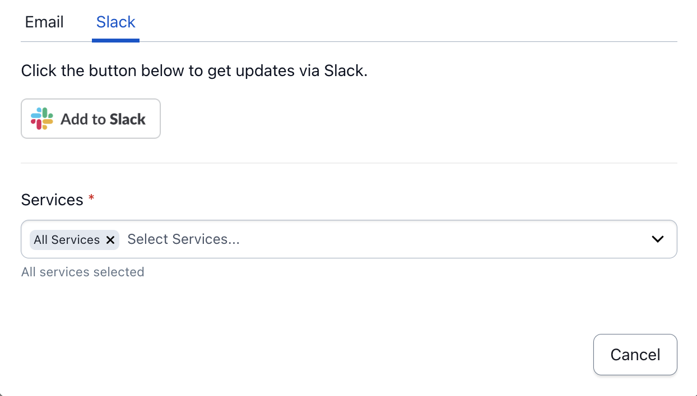
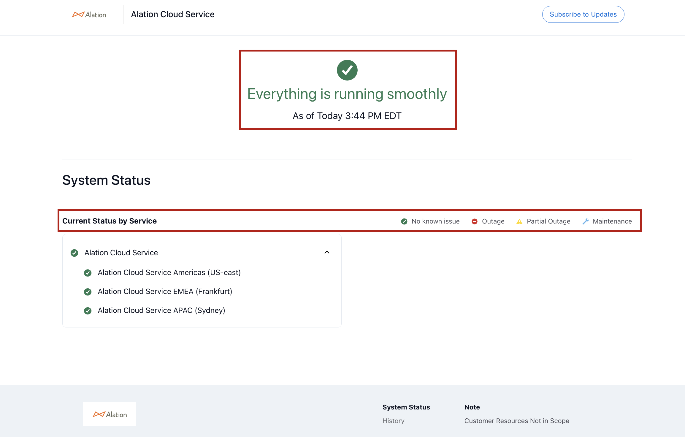

Status Page¶
Alation Cloud Service Applies to Alation Cloud Service instances of Alation
Important
The Status Page applies only to customers on the Cloud Native Architecture.
The Status Page displays the status by region for all the tier-one shared services. If there is an issue that impacts only an individual customer, the status will not be reflected on the public page
The Alation Cloud Service (ACS) Status Page is where you can get real-time information and updates about ACS. The Status Page enables you and anyone else at your organization to self-serve when you need to understand any issues that may arise. With the Status Page, anyone at your organization can subscribe to updates or visit the website so you can directly get more information without having to open a support ticket. If you ever experience an issue with your ACS instance, the Status Page can be checked first to see if there are any known issues affecting customers. Specifically, you can check the status of ACS by region and subscribe to notifications for incidents.
Navigate to the Status Page with this URL: https://status.alationcloud.com/.
The information provided on the Status Page can help you plan any further actions. You can always contact Alation Support for more help.
Subscribe to Updates¶
When you subscribe to updates, you will be notified about events without having to visit the Status Page directly. You can receive status notifications of an issue affecting your service’s region. You can subscribe to updates through email or email and Slack.
Click the Subscribe to Updates button in the upper right and fill in the relevant information to receive notifications.
Best Practice When Subscribing to Updates¶
Be sure to review carefully and only select the relevant service(s) that you want to receive updates on. There is one service per region so you will want to select the region that your ACS instance is hosted in. This will ensure that you only receive updates that are relevant to your ACS instance and do not receive updates regarding regions where you are not using Alation.
Subscribe to Email Updates¶
Notifications are sent directly to your inbox when you subscribe to email updates.
Click the Subscribe to Updates button in the upper right.
In the dialog under the Email tab, type in your email address
- Click the dropdown to choose the region where your ACS instance is hosted.
The default location shows as All Services.
Select the region your ACS instance is in. This will remove All Services and replace it with only the region you have selected.
If needed, you can also add additional regions or remove regions.
Click the Subscribe Email button to receive updates about ACS.
Subscribe to Slack Updates¶
Notifications are sent directly to your Slack account when you subscribe to Slack updates.
Note
Go back to the Email tab and click the Subscribe Email button to receive updates about ACS.
The Status Page app has not been added to Alation’s Slack. When you click Add to Slack, there is currently no action performed and you will not be subscribed to Slack updates. Subscription information will be updated at a later date when Slack has been added.
View System Status¶
The Status Page shows the overall health of ACS.
The top center banner displays the most recent status across all services and will show a green-circled check mark when everything is running smoothly.
View Current Status by Service¶
Below the System Status heading is the Current Status by Service dropdown, which provides updates by service. There is one service per region. You can check the status for the region your ACS instance is hosted in.
Updates are shown by the color and symbol pertaining to the issue:
Green circle with a check mark: No known issue
Red circle with a line: Outage
Yellow triangle with an exclamation point: Partial outage
Blue wrench: Maintenance
View Incidents¶
If there is an active incident, you will see a post on the Status Page above System Status.
View Incident Updates¶
The incident posts contain the following information, which is also sent to your email or Slack if you are subscribed:
The incident title describing the specific issue
The incident status (Detected, Investigating, or Resolved)
The time the message was posted
Actions being taken
Affected services
You may also see information on how long until the next update.
Within the post, the View incident details button takes you to a separate page to view the timeline of the issue. You can click the Send me updates button to receive updates via email for that specific incident.
Note
If you are already subscribed to your service region, you will automatically receive notices about specific incidents. You will not get notifications about impacts in other regions.
View Incident Resolutions¶
Once an incident is resolved, the Status Page reverts back to display a green check mark. If you are subscribed to updates, a Resolved notification is sent to your email.
View Incident History¶
You can view the history and details of a specific incident, such as when it was detected and when it was resolved. Click the History button in the lower-right under System Status to view the incident timeline.
If you receive a notification about an incident and see no known issues when checking the Status Page, you can view the details and entire history of an incident by clicking History at the bottom.
Planned Maintenance¶
Important
At this time, planned maintenance events apply only to APAC and EMEA regions.
When there is a planned maintenance event, the ACS Status Page displays a maintenance notification post with detailed information about the upcoming maintenance.
Maintenance Notifications¶
A maintenance notification includes:
Title summarizing the maintenance activity
Date of the maintenance
Duration of the maintenance
Status (Scheduled, In Progress, or Complete)
Brief description of the maintenance actions being performed
A maintenance notification is posted in the section above the System Status. If you are subscribed to updates, you will also receive a detailed notification about the maintenance.
Maintenance Stages¶
- A planned maintenance event includes the following stages:
Scheduled Maintenance: Each planned maintenance event that includes downtime starts with a a scheduled maintenance post.
Maintenance Notifications: A maintenance notification is always provided in advanced of the maintenance activity.
In-progress Status: When a planned maintenance has started, the maintenance event status is updated to in-progress.
Complete Status: When a planned maintenance is finished, the maintenance event status is updated to complete.
Maintenance Details¶
Click View maintenance details for the maintenance timeline information. There is also an option to receive email updates for a specific event if you have not already subscribed to updates.
Maintenance History¶
To view the timeline of planned maintenance, click History under System Status at the bottom of the screen.